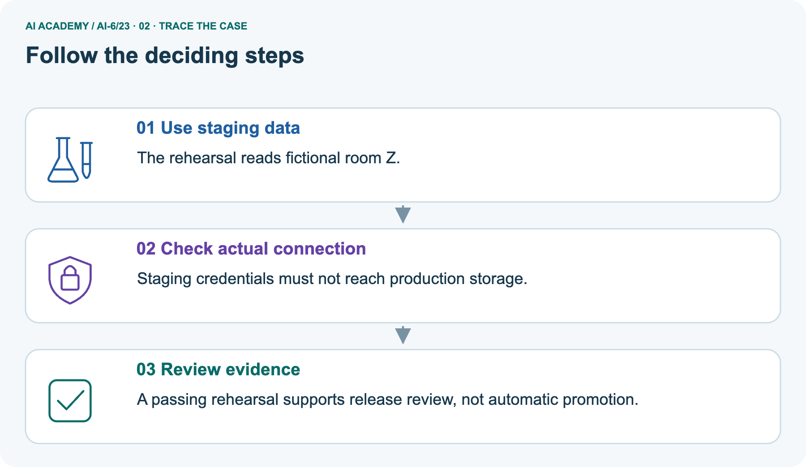
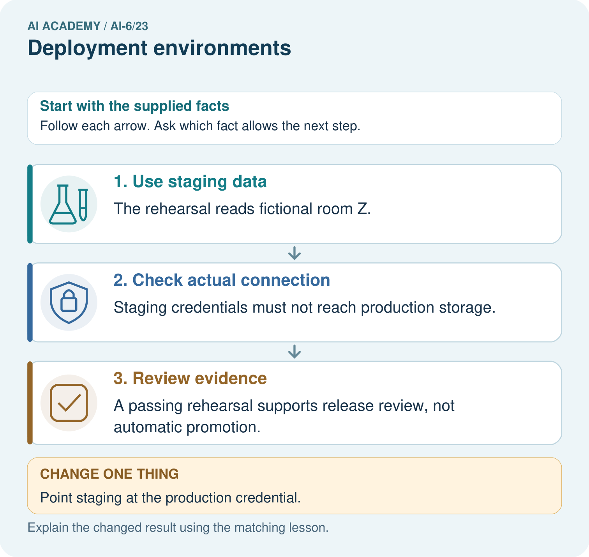
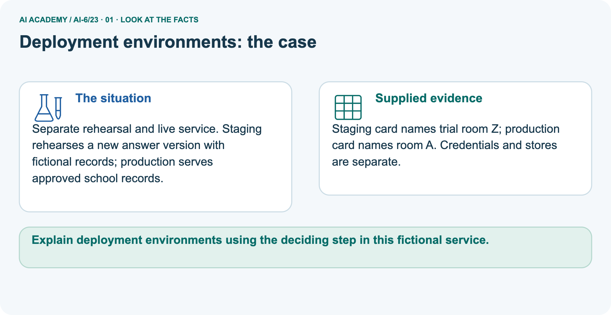
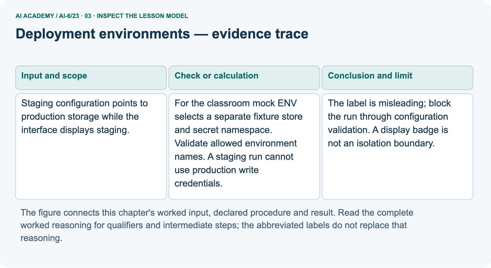
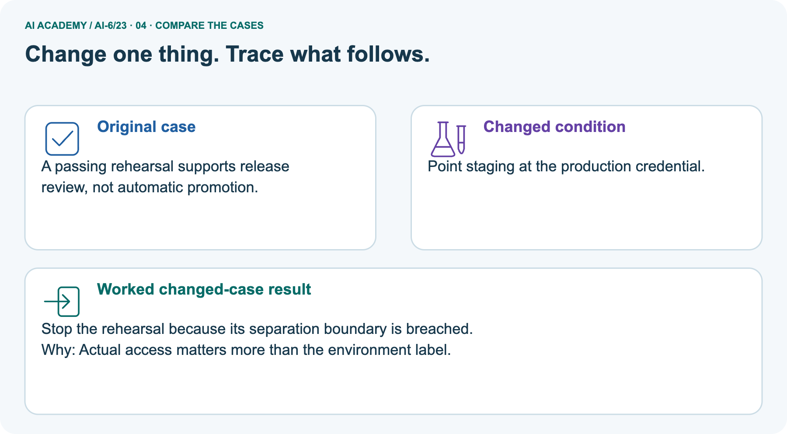
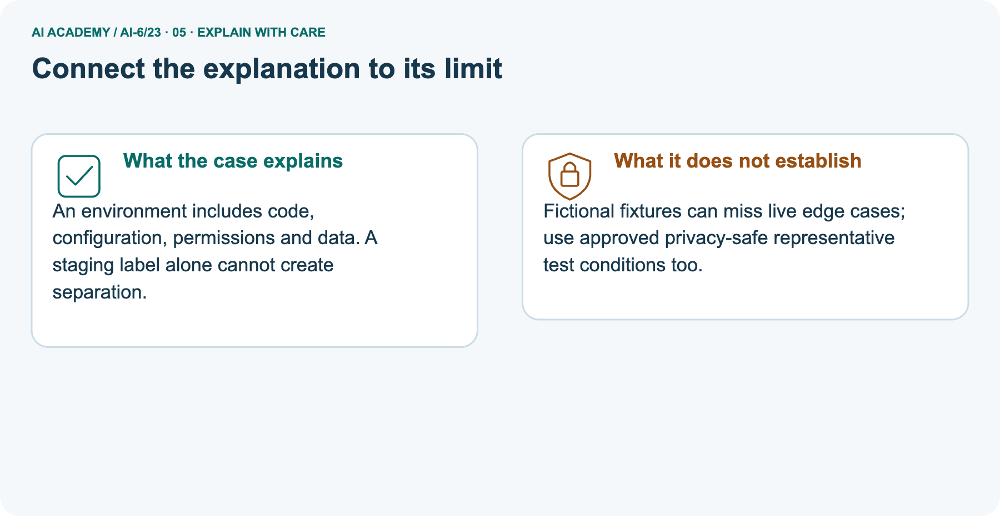
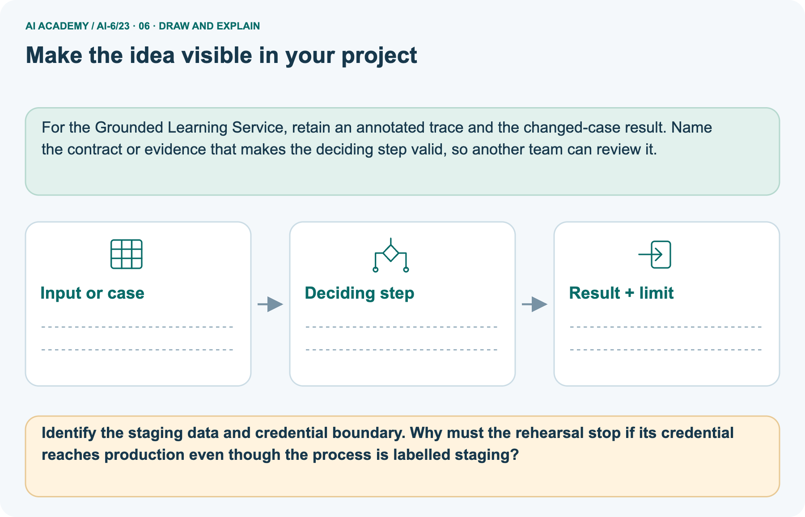

AI Academy · Level 6 · Grade 11 · Week 23 · Teacher guide
Deployment environments
Learn to understand, design, build, test and explain AI systems responsibly.
Project: Grounded Learning Service
THE CONNECTED WEEK
Ask where the run points and what its credential can do.
Teach data, namespace and authority separation with harmless local fixtures.
Keep one habit: Model wrong store → contrast wrong credential → inspect lookup trace → assess development case → record real-isolation limits.
Main lesson · Section 1
Prepare the connected service investigation
Keep modelling, shared practice and independent evidence distinct.
Target and main teaching plan
Primary target: Explain the mechanism and terminology of deployment environments
| Session | Sequence and minutes | Resources |
|---|---|---|
| Session 1 · Understand · 45 min | 0–7: recall and prerequisite; 7–15: inspect the concrete case and predict; 15–30: teacher models the worked trace; 30–40: learners explain a step using the text and visual; 40–45: check the core idea. | Use Your mission, Notice the evidence, See how it works, Words that unlock the idea and Follow a worked example; record recall in the workbook. |
| Session 2 · Practise · 45 min | 0–5: retrieve the procedure; 5–15: W2 completion practice; 15–23: explain and check with a partner; 23–30: each learner answers the misconception check; 30–40: targeted reteaching or a harder variation; 40–45: prepare the investigation. | Use Find and repair a mistake, Practise together and Build your understanding; use the matching workbook W2 and Individual reasoning check. |
| Session 3 · Investigate and transfer · 45 min | 0–5: retrieve the decision rule; 5–20: investigate or trace; 20–30: start the independent case; 30–38: connect the project; 38–43: act on feedback; 43–45: plan the return check. | Use Run the investigation, Connect your project and Try a new case independently. Allow extra time for the full task set. When code is supplied, use the examples in See how it works or Follow a worked example and the browser lab in Supported practice, repair and portfolio. |
This is a starting allocation of 135 minutes, not a validated duration. Preserve all named topics. Schedule extra time for connected examples, the full investigation, independent cases and project building.
Repeated copies of a case share one recorded attempt; they are not new evidence.
Preparation and prerequisite
Lesson and workbook; paper and pencil
Calculator and optional local Python 3 for arithmetic; no live API or private data
Prepare the fresh retry separately and withhold its solution until after collection
A result depends on the inputs, procedure and conditions that produced it. Preserve data roles and distinguish observed outcomes from predictions or unmeasured conditions.
If the prior concept cannot be explained, use a short retrieval activity before this chapter.
Opening retrieval
Without opening the old lesson, explain one key idea from Queues and asynchronous work. Give an example and a mistake that the idea helps you avoid.
Look for: Explain the mechanism and terminology of queues and asynchronous work
Reference example, not the only acceptable wording: Teacher explanation: Queues separate acceptance from completion. Work may be redelivered, so consumers must preserve operation IDs and deduplicate committed effects.
A queued job is pending, running, completed or failed. Acknowledge only after the declared durable completion step. A repeated completed ID returns its prior result; unknown status needs reconciliation.
Without opening the old lesson, explain one key idea from Data retention and deletion. Give an example and a mistake that the idea helps you avoid.
Look for: Explain the mechanism and terminology of data retention and deletion
Reference example, not the only acceptable wording: Teacher explanation: Retention and deletion cover all declared stores, including caches and logs. Removing a visible row may leave copies elsewhere.
Toy policy retains session content for 7 days and deletes it when age is at least 7. Audit metadata may remain for 30 days without content. Track primary storage, cache and backup policy separately.
Without opening the old lesson, explain one key idea from External side effects and recovery. Give an example and a mistake that the idea helps you avoid.
Look for: Explain the mechanism and terminology of external side effects and recovery
Reference example, not the only acceptable wording: Teacher explanation: External effects can succeed while their acknowledgement is lost. Recovery must inspect committed state before repeating the operation.
The mock ledger records prepared, committed or unknown per operation ID. Retry a committed operation by returning its result; reconcile unknown status instead of assuming failure.
Preserve compensation as a separate authorised action.
Pictured end goal
Explain deployment environments using the deciding step in this fictional service.
Earlier wording, alternatives and picture transcripts
Teach the learning cycle
Retrieval answer guidance
Queues and asynchronous work
Data retention and deletion
External side effects and recovery
Use the three-session teaching cycle above, with extra time as needed. Development, staging and production are distinct environments with explicit data and credential boundaries. Test configuration must not silently target production. Use the supplied constructed scenarios to make the mechanism inspectable. Collect W4 before sharing solutions. Students should name intermediate evidence and limitations; classroom pacing and learning effectiveness remain unvalidated.
Outcomes
Explain the mechanism and terminology of deployment environments
Apply the stated procedure to a new case with a traceable result
Identify an assumption or limitation and design a revealing follow-up
Preparation
Prerequisite answer
End goal for the pictorial case
This added worked case illustrates the week’s main idea. Retain all original and connected topics; schedule its practice within the teaching cycle.
Main lesson · Section 2
Teach target, namespace and authority as explicit boundaries
Inspect actual configuration rather than treating a badge as enforcement.
Definitions and complete fictional manifest
Development, staging and production are distinct environments with explicit data and credential boundaries. Test configuration must not silently target production.
For the classroom mock ENV selects a separate fixture store and secret namespace. Validate allowed environment names. A staging run cannot use production write credentials.
| Symbolic environment | Store / secret namespace / credential ID | Fictional room |
|---|---|---|
| development | dev-fixtures / dev-mock / dev-reader | D |
| staging | stage-fixtures / stage-mock / stage-reader | Z |
| production | approved-school / prod-mock / prod-reader | A |
| Allowed operation | Read only, in the environment and store declared by trusted credential metadata | No writes |
| Configuration validation | Exact field names; known environment; matching store, namespace and credential authority | Block before fixture lookup on mismatch |
| Credential IDs | Harmless symbolic labels, not usable keys or secret values | No real secret access |
| Isolation limit | Dictionary checks model policy decisions, not actual IAM or network enforcement | No live systems used |
Main decision ledger and checked reasoning
| Staging request variant | Expected decision | Local read trace |
|---|---|---|
| Label staging, store approved-school | Blocked: store crosses environment | Empty |
| Correct stage-fixtures / stage-mock / stage-reader, read | Allowed fictional rehearsal; returns room Z | stage-fixtures once |
| Correct staging store but prod-reader | Blocked: wrong credential authority | No added read |
| Correct staging store but prod-mock namespace | Blocked: wrong secret namespace | No added read |
| Correct staging fields but write operation | Blocked: read-only authority | No added read |
| Unknown environment name stage | Blocked; no implicit fallback | No added read |
Require separate checks of environment name, target store, secret namespace and trusted credential operation/scope. Main staging-to-production-store configuration blocks before lookup. Correct staging reads fictional Z once; substituting prod-reader blocks even with the correct staging store. Fake data cannot reduce a credential’s authority. No configuration silently defaults to production.
The symbolic production dictionary is not live school data. A passing rehearsal supports review rather than automatic promotion, and the code cannot demonstrate real network/IAM separation. The selected development/production-token case transfers the authority check to a different environment but retains the same principle; assess the learner’s explanation, not a claim of wholly unfamiliar content.
Deployment environments — evidence trace
Guided: The label is misleading; block the run through configuration validation. A display badge is not an isolation boundary.
Qualification: Passing staging tests does not prove production limits or operational conditions are identical.
Exit: accept a concrete variation with its predicted outcome and a stated condition that would challenge the mechanism; reject a claim resting on unmeasured evidence.
Staging configuration points to production storage while the interface displays staging.
The label is misleading; block the run through configuration validation. A display badge is not an isolation boundary.
Compare the intermediate evidence with the final statement. Explain why each number or decision follows from the stated inputs.
The conclusion belongs to this scenario and procedure; changing the inputs, evaluation population or authority can change what it establishes. Retain the raw record so a later revision can be compared honestly.
Mismatch and representativeness probes
| Probe | Expected interpretation |
|---|---|
| Staging badge but production target | Block; label is not an isolation boundary |
| Fake records but production-capable credential | Authority crosses environments; fake data does not repair it |
| Staging store and correct credential, wrong namespace | Block; do not silently borrow production secrets |
| Unknown environment or missing field | Reject rather than default to production |
| Read-only credential asked to write | Block operation mismatch |
| Successful fictional rehearsal | Evidence for supplied fixtures; no automatic promotion |
| Actual network route/IAM privileges | Not exercised by this symbolic model |
| Real representative test conditions | Require approved privacy-safe cases, not copied private production data |
Separate room-Z rehearsal and changed-credential scope
Separate rehearsal and live service. Staging rehearses a new answer version with fictional records; production serves approved school records.
Staging card names trial room Z; production card names room A. Credentials and stores are separate.
The picture’s approved rehearsal reads fictional room Z with staging-only authority. Its contrasting production card names room A; in our program both are harmless dictionaries. The main bad configuration points staging at the production-labelled store and must stop before any lookup.
The pictured change instead keeps the staging store but substitutes a production credential; this also blocks, for an independent authority mismatch. A successful room-Z rehearsal supports review of that fixture only. It does not promote code, verify every live edge case or prove actual storage/credential isolation.
Picture trace and boundary key



Read the picture one step at a time
An environment includes code, configuration, permissions and data. A staging label alone cannot create separation.
Fictional fixtures can miss live edge cases; use approved privacy-safe representative test conditions too.
Change: Point staging at the production credential.
Prediction: Stop the rehearsal because its separation boundary is breached.
Reason: Actual access matters more than the environment label.
Earlier wording, alternatives and picture transcripts
Begin by writing the question the procedure is intended to answer. Identify the information already supplied, the information it will produce and the information still missing.
These are constructed classroom examples; they do not require live accounts, private records or an external service. Do not treat a plausible explanation as a measured outcome.
Before applying the procedure, write its units, denominator or decision boundary where relevant. A partner should be able to repeat each step using the same inputs.
If a required input is absent or violates the stated contract, record that condition explicitly instead of quietly replacing it with a convenient value.
| Term | Meaning |
|---|---|
| Environment | A declared deployment/configuration context |
| Isolation | Preventing unintended cross-context access |
| Configuration mapping | The relationship between environment and allowed resources |
Model the reasoning aloud
Use the complete worked example below before asking learners to complete W2. Reveal a small part, invite a prediction, then explain the deciding step.
These teacher notes contain solutions; do not reveal the independent case answer during modelling.
| Thinking move | Teacher prompt |
|---|---|
| Plan | What is given? What is the question? Which procedure fits these facts? |
| Do | Point to each input and intermediate step in the worked trace. Name the rule that allows the next step. |
| Check | Does the output answer the question? Which assumption or limitation prevents a larger claim? |
Use the diagram and verbal explanation together. Ask learners to match a sentence to a specific visual step; do not assign learners fixed visual or auditory learning styles.
A pictorial worked case: Deployment environments
The facts we will use



Why this result follows
What this example does not establish
Change one thing in the pictured case
Ask while showing the picture
Cover the result. Ask learners to name the inputs and predict the next step. Uncover one step, connect the icon to the actual procedure, and explain its evidence. Then change the supplied condition and compare.
The picture is a representation; it does not document execution of a real AI model.
Main lesson · Section 3
Model a step,then remove help
Collect each learner’s reasoning before showing a key.
Current completion task and checked reasoning
Completion task: Staging configuration points to production storage while the interface displays staging. Show the intermediate steps and give the conclusion with its scope.
Teacher check: Teacher explanation: The label is misleading; block the run through configuration validation. A display badge is not an isolation boundary.
Start by identifying the given inputs together. Leave the intermediate steps blank. If needed, model one step, then withdraw that help on the next step. Move to a full trace only when the partial trace is understood.
For partners, alternate explainer and checker; collect a response from every learner before discussion.
Individual misconception check
Use the worked case for Deployment environments. Proposed explanation: “The worked result establishes every future case”. Decide whether this explanation is supported.
Point to the step or supplied fact that decides; explain your repair if needed.
Expected correction: Passing staging tests does not prove production limits or operational conditions are identical.
Collect explanations, not only yes/no votes. If a misunderstanding is common, re-model the relevant step for the class.
If it affects a few learners, give a short targeted group explanation while others solve a more demanding variation.
Pictured reasoning and changed case
Identify the staging data and credential boundary. Why must the rehearsal stop if its credential reaches production even though the process is labelled staging?
The rehearsal reads fictional room Z. Staging credentials must not reach production storage. A passing rehearsal supports release review, not automatic promotion.
Changed case: Stop the rehearsal because its separation boundary is breached. Actual access matters more than the environment label.
Changed-case reasoning: Stop the rehearsal because its separation boundary is breached. Actual access matters more than the environment label.
Collect each learner’s explanation before discussion. Use the first missing connection between input, deciding step and result to choose support. This question is worked-case practice, not fresh mastery evidence.
Accessible support and extension
Use See how it works and Follow a worked example. Collect a prediction before revealing its result; ask the learner to point to each intermediate fact.
Provide an input/procedure/result/limit frame and a calculator when needed. Ask students to identify the first step before completing the whole trace.
Extension: compare two concrete variants of this mechanism while holding unrelated conditions fixed; report both successful and unsuccessful outcomes.
Earlier wording, alternatives and picture transcripts
| Time or stage | Teacher action |
|---|---|
| Session 1: 0–7 minutes | Retrieve the prerequisite; identify the input, procedure and evidence source. |
| 7–18 minutes | Explain section 1 and vocabulary. Complete W1 with a mechanism-based explanation. |
| 18–32 minutes | Trace the declared procedure and worked case. Complete W2, recording intermediate steps. |
| 32–45 minutes | Discuss the diagram with the worked input; use W3 to distinguish measured claims and limitations. |
| Session 2: 0–8 minutes | Retrieve the worked reasoning and collect the guided response before discussing it. |
| 8–20 minutes | Compare a proposed boundary variant with the original case; identify what remains fixed. |
| 20–35 minutes | Collect W4 independently. Require the procedure trace and the bounded conclusion. |
| 35–45 minutes | Use W5 and exit responses for feedback. Administer the fresh retry after feedback and preserve both attempts. |
Reduce help deliberately
Individual reasoning check
Pictorial practice question
Reasoned teacher answer
Main lesson · Section 4
Run the complete supplied investigation
Separate predictions,actual runs and paper traces.
Complete inputs,expected results and limits
Main wrong production store blocks before any lookup. Correct staging reads Z once; wrong production credential or namespace and a write request block without an added read. Selected development fake-record case violates the credential authority boundary: use development-only mock authority and inspect the actual endpoint/store as well as the label.
Passing fixture checks is scoped evidence, not production readiness or real isolation proof.
Diagnose the current misconceptions
The worked result establishes every future case: Passing staging tests does not prove production limits or operational conditions are identical.
A missing input may be replaced without recording the change: A replacement changes the evidence or contract. Record the change and its justification; do not silently turn unknown into a measured value.
Repeating an assessed case is new independent evidence: A replay checks consistency. An example used for feedback or revision cannot later be described as untouched final evaluation.
Use Run the investigation for the evidence ledger. Add a boundary or missing-input case and record the expected response before checking. More successful repeats of one case do not establish wider coverage.
Choose accessible support
| What the response shows | Next teaching action |
|---|---|
| Missing or misread facts | Read the case aloud, mark supplied versus unknown facts, and let the learner restate it. |
| Wrong procedure | Return to the deciding step in the worked case. Contrast it with the proposed incorrect explanation. |
| Arithmetic or implementation error | Trace intermediate values or lines; preserve the first mismatch and retry that step. |
| Correct result without a reason | Ask for a trace and a changed case before marking independent understanding. |
| An unsupported wider claim | Ask which supplied evidence supports the claim and which further observation would be needed. |
Offer an oral explanation, drawing, enlarged visual or fewer examples when that removes a reading/writing barrier. Keep the same reasoning goal.
Stretch secure learners by changing a boundary or assumption and asking them to defend the effect, not simply by assigning more of the same questions.
Earlier wording, alternatives and picture transcripts
Match the support to the first error
Main lesson · Section 5
Assess the new service scenario
Keep the selected answer private until after a first attempt.
Selected independent task and checked answer
Selected case: Development uses fake records but a production token. What boundary is violated?
Teacher explanation: Credential scope crosses environments. Use development-only mock authority and inspect endpoints as well as labels.
Judge explanation,trace and limits
| Dimension | Evidence required |
|---|---|
| Explanation | Names the applicable idea or procedure and ties it to the supplied facts. |
| Trace and result | Preserves the given inputs and shows the relevant intermediate steps; distinguishes a prediction from an observed execution. |
| Limits | States the assumptions, missing evidence or conditions under which the result would change. |
Record each dimension as not yet, with support, or independent. Accept a valid alternative procedure with a defensible trace.
Do not penalise an honestly recorded model failure if the learner correctly explains its evidence and limits.
Give one usable repair
Name the earliest unsupported step and give one action to repair it. Have the learner make that repair now and explain why. Then assess the relevant skill on a fresh, fully specified case.
Confirm it was not previously practised with feedback; solve and check the new case before assigning it. A follow-up design prompt is a starting brief, not automatically an equivalent test.
W1 Explain the mechanism
Explain the weekly mechanism in your own words. Use the worked scenario to name its input, decision rule and output.
Teacher explanation: Development, staging and production are distinct environments with explicit data and credential boundaries. Test configuration must not silently target production.
For the classroom mock ENV selects a separate fixture store and secret namespace. Validate allowed environment names. A staging run cannot use production write credentials.
W2 Trace the worked case
Staging configuration points to production storage while the interface displays staging. Show the intermediate steps and give the conclusion with its scope.
Teacher explanation: The label is misleading; block the run through configuration validation. A display badge is not an isolation boundary.
W3 Audit the limit
A report omits this qualification: Passing staging tests does not prove production limits or operational conditions are identical.
Explain how omitting it could change a reader's interpretation, and write an accurate replacement.
Teacher explanation: Passing staging tests does not prove production limits or operational conditions are identical.
State the observed result separately from the unverified or out-of-scope claim; preserve the original evidence rather than inventing a missing fact.
W5 Design a revealing follow-up
For the worked scenario, propose one additional case that could reveal a failure, describe its expected outcome before running it, and explain what would need to remain fixed for a fair comparison.
Do not reuse W4 as a new final test after receiving feedback.
Teacher explanation: Accept a concrete variant of the worked input or a missing/conflicting/boundary condition, with an expectation derived from the declared procedure.
Require preserved settings, original outputs and data roles. Passing staging tests does not prove production limits or operational conditions are identical.
The new case should test this particular mechanism rather than merely restate the original result.
Earlier wording, alternatives and picture transcripts
Guided and exit questions
Guided: The label is misleading; block the run through configuration validation. A display badge is not an isolation boundary.
Qualification: Passing staging tests does not prove production limits or operational conditions are identical.
Exit: accept a concrete variation with its predicted outcome and a stated condition that would challenge the mechanism; reject a claim resting on unmeasured evidence.
W1 Explain the mechanism
W2 Trace the worked case
W3 Audit the limit
W4 Apply a new case independently
Development uses fake records but a production token. What boundary is violated?
Teacher explanation: Credential scope crosses environments. Use development-only mock authority and inspect endpoints as well as labels.
W5 Design a revealing follow-up
Independent assessment and fresh retry
W4: Credential scope crosses environments. Use development-only mock authority and inspect endpoints as well as labels. Require intermediate reasoning and the stated scope.
Fresh retry: Test environment correctly uses fixtures but exports production secrets to logs. Expected reasoning: Secret boundary violated despite test data. Validate environment/credential mapping and redact logs.
If students need support, record it and reassess with another new case rather than awarding independence to a copied answer.
Assess independent transfer
Selected case answer
Feedback that the learner uses
Main lesson · Section 6
Connect, support and revisit service design
Use saved evidence and boundary decisions to choose the next step.
Project and next-week bridge
Add a labelled deployment environments evidence sheet to Grounded Learning Service. Show how you can explain the mechanism and terminology of deployment environments.
Use the supplied fictional case and keep its inputs, intermediate steps, calculation or prediction, and limitation. Connect this record to last week’s record; a matching answer without a trace is insufficient.
Provide an input/procedure/result/limit frame and a calculator when needed. Ask students to identify the first step before completing the whole trace.
Extension: compare two concrete variants of this mechanism while holding unrelated conditions fixed; report both successful and unsuccessful outcomes.
Next connection: Release and rollback. Preserve the current case record and retrieve its evidence boundary before moving on.
Retain the project ledger and assess a changed case after support. Check the relevant prerequisite before carrying this component forward.
For the Grounded Learning Service, retain an annotated trace and the changed-case result. Name the contract or evidence that makes the deciding step valid, so another team can review it.
Delayed return and support record
Suggested return points in this level: ai-6/24, ai-6/26, ai-6/29. Use actual classroom dates, adjusting for holidays and gaps. One, three and six teaching weeks are scheduling choices, not a claimed optimal spacing.
At a delayed check, ask for the idea from memory and a changed application. Compare with the earlier independent response and record support used.
For a new level, revisit the previous capstone before checking the new prerequisites.
| Record | Teacher evidence |
|---|---|
| Learner code and date | |
| Concept and case used; prior exposure | |
| Explanation / trace / limits | |
| Support and first repair | |
| Changed case and delayed outcome | |
| Next teaching action |
Use the evidence to choose reteaching or the next step. A completed page, confidence rating or attractive project does not by itself demonstrate understanding.
Earlier wording, alternatives and picture transcripts
Plan the delayed return
Project evidence from this case
Reference bank and extra practice
Choose the reference that helps your next step.
Reference · Alternative planning checklist
Reference · Section 7
Reference · Alternative planning checklist
Use alongside the main route when helpful.
Planning,assessment and project reminders
Teaching target: Explain the mechanism and terminology of deployment environments
Prepare the labelled worked-case picture, the matching workbook, fictional input cards and a place for individual responses. Check a local Python 3 environment before class; have a paper-trace version ready.
| Session | Plan | Resources |
|---|---|---|
| Session 1 · Understand · 45 min | 0–7: recall and prerequisite; 7–15: inspect the concrete case and predict; 15–30: teacher models the worked trace; 30–40: learners explain a step using the text and visual; 40–45: check the core idea. | Use Your mission, Notice the evidence, See how it works, Words that unlock the idea and Follow a worked example; record recall in the workbook. |
| Session 2 · Practise · 45 min | 0–5: retrieve the procedure; 5–15: W2 completion practice; 15–23: explain and check with a partner; 23–30: each learner answers the misconception check; 30–40: targeted reteaching or a harder variation; 40–45: prepare the investigation. | Use Find and repair a mistake, Practise together and Build your understanding; use the matching workbook W2 and Individual reasoning check. |
| Session 3 · Investigate and transfer · 45 min | 0–5: retrieve the decision rule; 5–20: investigate or trace; 20–30: start the independent case; 30–38: connect the project; 38–43: act on feedback; 43–45: plan the return check. | Use Run the investigation, Connect your project and Try a new case independently. Allow extra time for the full task set. When code is supplied, use the examples in See how it works or Follow a worked example and the browser lab in Supported practice, repair and portfolio. |
Before class, solve the supported practice: Staging configuration points to production storage while the interface displays staging. Show the intermediate steps and give the conclusion with its scope.
Reasoned practice answer: Teacher explanation: The label is misleading; block the run through configuration validation. A display badge is not an isolation boundary.
Check every learner before discussion: Use the worked case for Deployment environments. Proposed explanation: “The worked result establishes every future case”. Decide whether this explanation is supported.
Point to the step or supplied fact that decides; explain your repair if needed.
Misconception repair: Passing staging tests does not prove production limits or operational conditions are identical.
Support: read the exact case aloud, enlarge the labelled picture, supply input cards and model only the first deciding step. Accept a spoken explanation or drawing; retain the reasoning goal.
Extension: Point staging at the production credential. Require a prediction and a reason before comparing. Expected result: Stop the rehearsal because its separation boundary is breached.
Reason: Actual access matters more than the environment label.
Independent assessment: withhold the reserved answer until the learner has attempted the new case. Record support separately from correctness.
| Criterion | Not yet | With support | Independent |
|---|---|---|---|
| Explanation | Names an answer without a deciding fact | Uses a hint to link fact and decision | Explains the deciding fact in own words |
| Trace or test | Cannot connect input and result | Completes steps with prompts | Traces or tests a changed case accurately |
| Limits and revision | Claims more than evidence supports | Names a limit after a prompt | States a defensible limit and useful next test |
Project checkpoint: Evaluate and revise. Compare with your starting method, explain errors and record a justified revision.
Use the weekly teacher answer for topic-specific reasoning. A saved progress tick is an activity record; judge mastery from the learner’s explanation and evidence.
Reference · Feedback,labs and repair paths
Reference · Section 8
Reference · Feedback,labs and repair paths
Retain the first attempt and the evidence used for a repair.
Feedback and record guidance
Use the two formative questions as supported practice, not as independent mastery scores. Discuss the deciding evidence rather than accepting a guessed selection.
The feedback comes from the reviewed public worked case. Do not reveal the separately reserved independent teacher answer until the learner has attempted that case.
This week has no code block. Use this routine when a later lesson includes an executable lab.
Ask students to predict before running code. Preserve errors and actual outputs; collect a changed test and an explanation. The branch-boundary and indexing lessons deliberately include failure cases.
Use the earlier worked-explanation links to address a specific missing building block, then return to the current question. Adapt this suggestion after observing the learner; it is not an automatic diagnosis.
Collect the completed-work portfolio as evidence. Record support separately from correctness, and assess explanation, trace/test and limitations. Progress ticks and quiz selections alone do not establish mastery.
Reference · Teach with the six pictures
Reference · Section 9
Reference · Teach with the six pictures
Choose one picture for a particular reasoning move.
01. Deployment environments: the case



Separate rehearsal and live service. Staging rehearses a new answer version with fictional records; production serves approved school records. Supplied facts: Staging card names trial room Z; production card names room A.
Credentials and stores are separate.
Point to the given fact that matters most. Explain why it matters.
Teacher prompt: Point to the given fact that matters most. Explain why it matters. Ask learners to describe one label or arrow in ordinary words. Use the adjacent transcript if the image is difficult to see.
02. Follow the deciding steps
Use staging data: The rehearsal reads fictional room Z. → Check actual connection: Staging credentials must not reach production storage. → Review evidence: A passing rehearsal supports release review, not automatic promotion.
Point to each numbered stage and explain which recorded input it uses.
Teacher prompt: Point to each numbered stage and explain which recorded input it uses. Ask learners to describe one label or arrow in ordinary words. Use the adjacent transcript if the image is difficult to see.
03. Deployment environments — evidence trace



Deployment environments — evidence trace. Staging configuration points to production storage while the interface displays staging. | For the classroom mock ENV selects a separate fixture store and secret namespace.
Validate allowed environment names. A staging run cannot use production write credentials. | The label is misleading; block the run through configuration validation. A display badge is not an isolation boundary.
Read the labels and values. Explain the relationship the model shows.
Teacher prompt: Read the labels and values. Explain the relationship the model shows. Ask learners to describe one label or arrow in ordinary words. Use the adjacent transcript if the image is difficult to see.
04. Change one thing. Trace what follows.



Original case: A passing rehearsal supports release review, not automatic promotion. Changed condition: Point staging at the production credential.
Expected result: Stop the rehearsal because its separation boundary is breached. Reason: Actual access matters more than the environment label.
Predict before checking the worked changed-case result. Name what changed and what the supplied facts allow you to conclude.
Teacher prompt: Predict before checking the worked changed-case result. Name what changed and what the supplied facts allow you to conclude. Ask learners to describe one label or arrow in ordinary words.
Use the adjacent transcript if the image is difficult to see. Changed-case reasoning: Actual access matters more than the environment label.
05. Connect the explanation to its limit



An environment includes code, configuration, permissions and data. A staging label alone cannot create separation.
Limit: Fictional fixtures can miss live edge cases; use approved privacy-safe representative test conditions too.
Explain the case, then point to a limit on the claim.
Teacher prompt: Explain the case, then point to a limit on the claim. Ask learners to describe one label or arrow in ordinary words. Use the adjacent transcript if the image is difficult to see.
Keep the stated scope: Fictional fixtures can miss live edge cases; use approved privacy-safe representative test conditions too.
06. Make the idea visible in your project



For the Grounded Learning Service, retain an annotated trace and the changed-case result. Name the contract or evidence that makes the deciding step valid, so another team can review it.
Draw your input, deciding step, result and limit. Supported question: Identify the staging data and credential boundary.
Why must the rehearsal stop if its credential reaches production even though the process is labelled staging?
Draw your project trace and justify the deciding step using evidence.
Teacher prompt: Draw your project trace and justify the deciding step using evidence. Ask learners to describe one label or arrow in ordinary words. Use the adjacent transcript if the image is difficult to see.
Supported practice key: The rehearsal reads fictional room Z. Staging credentials must not reach production storage. A passing rehearsal supports release review, not automatic promotion.
Changed case: Stop the rehearsal because its separation boundary is breached. Actual access matters more than the environment label.
Earlier wording, alternatives and picture transcripts
Use one picture at a time. Hide a worked result before asking for a prediction, then reveal it for feedback. These are supported teaching cases; retain the separate independent assessment for a fresh first attempt.